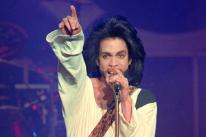

-
1958
Ο Prince έρχεται στον κόσμο
Click to ZoomΟ Prince Rogers Nelson, όπως ήταν το πλήρες όνομα του Prince, γεννήθηκε στις 7 Ιουνίου 1958 στη Μινεάπολη της πολιτείας Μινεσότα των ΗΠΑ. Ήταν γιος του πιανίστα και συνθέτη της jazz John Lewis Nelson (1916-2001) και της τραγουδίστριας της jazz Mattie Della Shaw (1933-2002).
Πήρε το όνομά του από τον πατέρα του, ο οποίος επί σκηνής χρησιμοποιούσε το ψευδώνυμο Prince Rogers. Μαζί με την αδερφή του, Tyka, επέδειξαν από νεαρή ηλικία ενδιαφέρον για τη μουσική. Άρχισε να γράφει τα δικά του κομμάτια όταν ήταν 7 χρονών. -
1968
Ο χωρισμός
Click to ZoomΌταν ο Prince γίνεται δέκα χρονών, οι γονείς του χωρίζουν. Η μητέρα του ξαναπαντρεύεται, και εκείνος μένει την μία με την μητέρα του και την άλλη με τον πατέρα του. Η σχέση του με τον πατριό του Hayward Baker είναι δύσκολη, αλλά είναι αυτός που πηγαίνει τον Prince να παρακολουθήσει συναυλία του James Brown. Η μουσική μπαίνει στην ζωή του πιο έντονα.
-
1976
Το πρώτο συμβόλαιο
Click to ZoomΟ Prince ηχογράφησε ένα demo με παραγωγό τον Chris Moon, και αργότερα προσέλαβε για μάνατζερ τον Owen Husney. Με τον Owen ηχογράφησε και άλλα demo. Αρκετές δισκογραφικές εταιρίες άρχισαν να δείχνουν ενδιαφέρον και το πρώτο συμβόλαιο δεν άργησε να έρθει. Σε ηλικία 18 ετών υπέγραψε δισκογραφικό συμβόλαιο με τη Warner. Η εταιρεία συμφώνησε με τον Prince για τρία albums και του έδωσε πλήρη δημιουργική ελευθερία να ηχογραφήσει το υλικό που θέλει.
-
1978
Το πρώτο album
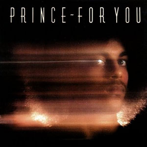
Click to ZoomTo 1978 κυκλοφόρησε το πρώτο του album με τίτλο For You, στο οποίο έπαιζε και τα 27 όργανα που ακούγονταν και είχε γράψει όλα τα τραγούδια. Στις συναυλίες τον συνόδευε ο Andre Cymone στο μπάσο, ο Dez Dickerson στην κιθάρα, ο Bobby Z στα drums και οι Gayle Chapman και Doctor Fink στα keyboards. Η πρώτη τους ζωντανή εμφάνιση έγινε στο Λος Άντζελες μπροστά σε στελέχη της Warner Bros, που δεν πείστηκαν από τις δυνατότητες του τραγουδιστή.
-
1979
Το δεύτερο album
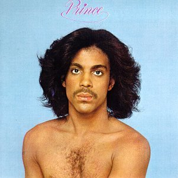
Click to ZoomΟ Prince συνέχισε να δουλεύει σκληρά και να γίνεται ολοένα καλύτερος. Πολύ γρήγορα έρχεται και το δεύτερο album. Κυκλοφόρησε στις 19 Οκτωβρίου 1979 με τίτλο Prince και πούλησε πάνω από 3 εκατομμύρια αντίτυπα στις ΗΠΑ. Οι κριτικές τώρα είναι καλύτερες, και ο ήχος του χαρακτηρίζεται σαν funk pop.
-
1980
Βρώμικο μυαλό και funk
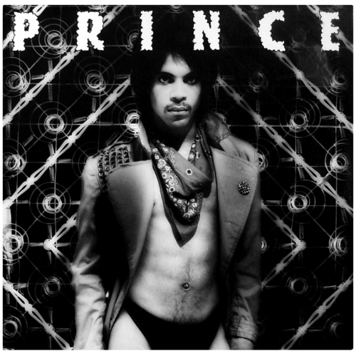
Click to ZoomΤο Dirty Mind είναι το τρίτο album του Prince. Κυκλοφόρησε 8 Οκτωβρίου 1980 από την Warner. Με αυτό το album και τα δύο επόμενα καθιέρωσε τον ήχο που έγινε στην πορεία χαρακτηριστικός και αναγνωρίσιμος, με ανδρόγυνα φωνητικά, φαλτσέτα, σόλα στην κιθάρα και στίχους με σεξουαλικά υπονοούμενα, σε έναν ακαταμάχητο συνδυασμό funk, ροκ, και χορευτικής μουσικής που θα έφτανε στο απόγειο το 1984 με το Purple Rain.
-
1981
Controversy
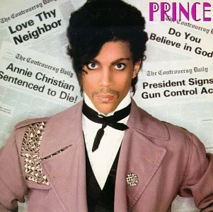
Click to ZoomΣτις 21 φεβρουαρίου 1981 ο Prince εμφανίζεται στο TV show Saturday Night Live με το τραγούδι Party Up. Στις 14 Οκτωβρίου 1981 κυκλοφορεί το τέταρτο album του Prince, ξανά από την Warner Bros. Λέγεται Controversy και βγάζει τέσσερα singles: Controversy, Sexuality, Let's work και Do me baby. Παράλληλα ο Prince δημιουργεί ένα side project συγκρότημα, τους Time.
-
1982
Το album που τον έκανε ευρύτερα γνωστό
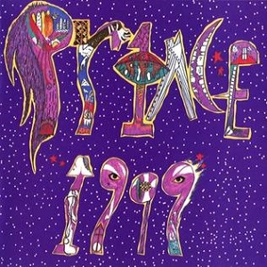
Click to ZoomΤο 1999 είναι το πέμπτο album του Prince. Κυκλοφορεί στις 27 Οκτωβρίου 1982 από την Warner. Το album αυτό είναι το πρώτο του top ten album στο Billboard στην Αμερική (φτάνει στο νούμερο 9), και γίνεται το πέμπτο εμπορικότερο album του 1983. Η δημοφιλία του Prince εκτοξεύεται, και μετατρέπεται σε pop star, δίπλα στον άλλον super star της εποχής, τον Michael Jackson.
-
1984
Η απογείωση στην κορυφή
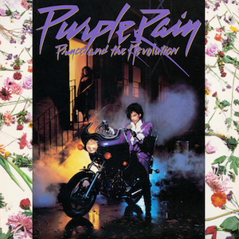
Click to ZoomΜε τη μπάντα του The Revolution, ο Prince κυκλοφόρησε το 1984 το Purple Rain, που πούλησε πάνω από δεκατρία εκατομμύρια αντίτυπα στις Η.Π.Α. και παρέμεινε για 24 εβδομάδες καρφωμένο στην κορυφή του Billboard. Έγινε το πιο επιτυχημένο εμπορικά album του Prince.
Το ομώνυμο film στο οποίο ο Prince έκανε το κινηματογραφικό του ντεμπούτο, κέρδισε και το βραβείο Όσκαρ Καλύτερου Τραγουδιού. -
1985
Άλλο ένα αριστουργηματικό album
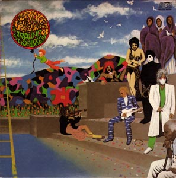
Click to ZoomΤο 1985 κυκλοφόρησε το άλμπουμ Around The World In A Day σκαρφαλώνοντας στην κορυφή των Αμερικάνικων albums με την τρίτη εβδομάδα κυκλοφορίας του. Με αυτό το album συνέχισε να σαρώνει με πιο ψυχεδελικούς ήχους. Αμέσως μετά ο Prince ίδρυσε την δισκογραφική εταιρία Paisley Park στο κέντρο της Minneapolis.
-
1986
Kiss
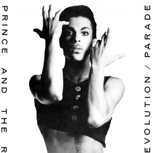
Click to ZoomΤο 1986 κυκλοφόρησε το Parade, στο οποίο υπήρχε ένα από τα μεγαλύτερα του hits, το Kiss. To Parade ήταν ουσιαστικά, το soundtrack της δεύτερης ταινίας του Prince, Under The Cherry Moon, στην οποία εκτελούσε και χρέη σκηνοθέτη. Οι κριτικές όμως, ήταν απογοητευτικές και δίπλα στο Όσκαρ του πλέον, έπρεπε να τοποθετήσει και ένα Χρυσό Βατόμουρο για την ερμηνεία του. Οι Wendy Melvoin και Lisa Coleman απολύθηκαν, o Bobby Z. αντικαταστάθηκε ενώ ο Doctor Fink παρέμεινε. Νέα μέλη προσλήφθηκαν στη θέση τους, ανάμεσά τους και η χορεύτρια Cat Glover.
-
1987
Sign o' the Times
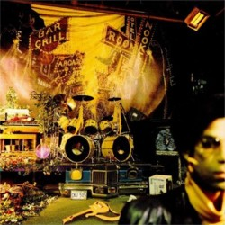
Click to ZoomΤο Sign o' the Times είναι το ένατο studio album του Prince. Κυκλοφόρησε στις 31 Μαρτίου 1987 από τις Paisley Park Records και Warner. Αυτός ο διπλός δίσκος ήταν τo αποκορύφωμά του δημιουργικά. Ήταν γεμάτος πολιτικές αναφορές και κοινωνικά μηνύματα δίπλα σε έντονα σεξουαλικά τραγούδια, ένα αριστουργηματικό άλμπουμ που σημάδεψε το δεύτερο μισό των ’80s. Το ομώνυμο κομμάτι και το The Cross συμπλήρωναν ερωτικούς ύμνους όπως το If I was Your Girlfriend και το I Could Never Take The Place of Your Man.
-
1988
Lovesexy
Click to ZoomLovesexy is the tenth studio album by Prince. The album was released on May 10, 1988 by Paisley Park Records and Warner, a little over a year after Prince's previous studio album, Sign o' the Times, which received critical praise and a Grammy nomination for Album of the Year.
-
1989
Batman
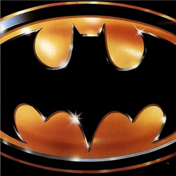
Click to ZoomBatman is the eleventh studio album by Prince and the soundtrack album to the 1989 film Batman. It was released on June 20, 1989 by Warner.
-
1990
Ένα όχι τόσο επιτυχημένο album
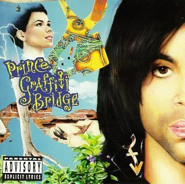
Click to ZoomΤο Σεπτέμβριο του 1990 κυκλοφόρησε το Graffiti Bridge, που ήταν το soundtrack της ομώνυμης ταινίας. Το άλμπουμ περιείχε μονάχα συνθέσεις του Prince τις οποίες τραγουδούσε μαζί με άλλους καλλιτέχνες όπως το νεαρό τότε Tevin Campbell, την Mavis Staples και τους Time. Δυστυχώς δεν μπόρεσε να επαναληφθεί η επιτυχία του Batman. Η αποτυχία τόσο του άλμπουμ όσο και της ταινίας ήταν παταγώδης. Ήταν η πρώτη φορά που συνέβαινε κάτι τέτοιο αλλά ο Prince ήταν αρκετά απασχολημένος με το να θέτει τις βάσεις για τα νέα του σχέδια.
-
1991
Diamonds and Pearls
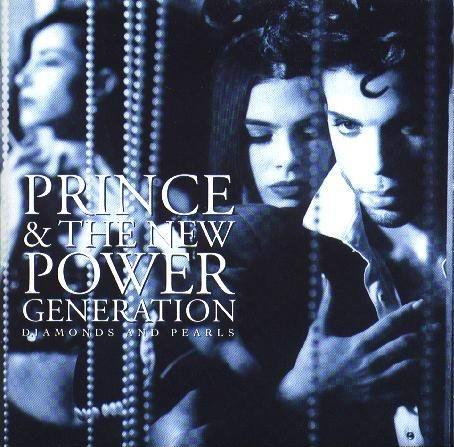
Click to ZoomDiamonds and Pearls was the thirteenth studio album by Prince, and the first to feature his backing band The New Power Generation. It was released on October 1, 1991 by Paisley Park Records and Warner.
The album produced several hit singles, including Gett Off, Cream, Money Don't Matter 2 Night, Insatiable, and the title track. -
1993
Το σύμβολο
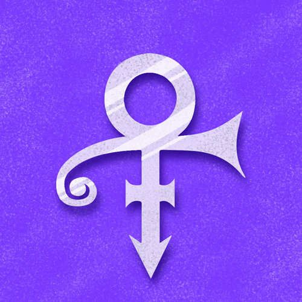
Click to ZoomIn 1993, in rebellion against Warner Bros., which refused to release Prince's enormous backlog of music at a steady pace, he changed his name to , which was explained as a combination of the symbols for male (♂) and female (♀). In order to use the symbol in print media, Warner Bros. had to organize a mass mailing of floppy disks with a custom font. The symbol was soon dubbed "The Love Symbol", and until 2000, Prince was referred to as "The Artist Formerly Known as Prince" or simply "The Artist".
-
1996
Ο πρώτος γάμος και η τραγωδία
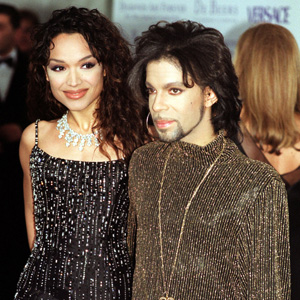
Click to ZoomΤο 1996 παντρεύτηκε την χορεύτρια, Mayte Garcia. Όμως, μια προσωπική τραγωδία τον σημάδεψε, όταν ο γιος τους γεννήθηκε με το σύνδρομο Pheiffer και πέθανε μετά από μια εβδομάδα. Το ζευγάρι χώρισε το 1999.
-
2004
Musicology
Click to ZoomIn April 2004, Prince released Musicology through a one-album agreement with Columbia Records. The album rose as high as the top five on some international charts (including the US, UK, Germany, and Australia). The US chart success was assisted by the CDs being included as part of the concert ticket purchase, thereby qualifying each CD (as chart rules then stood) to count toward US chart placement. Three months later, Spin named him the greatest frontman of all time.
-
2006
3121
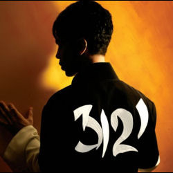
Click to Zoom3121 is the thirty-first studio album by Prince. It was released on March 21, 2006 by NPG Records and distributed by Universal Music.
-
2016
Ο ξαφνικός θάνατος
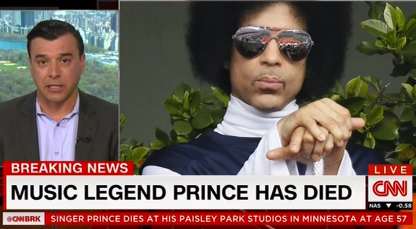
Click to ZoomΣτις 21 Απριλίου του 2016 γίνεται γνωστή η είδηση του ξαφνικού θανάτου του εξαιτίας μίας γρίπης που τον ταλαιπωρούσε.
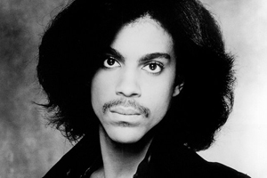